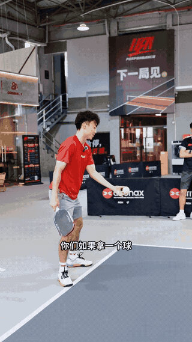
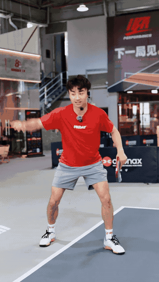
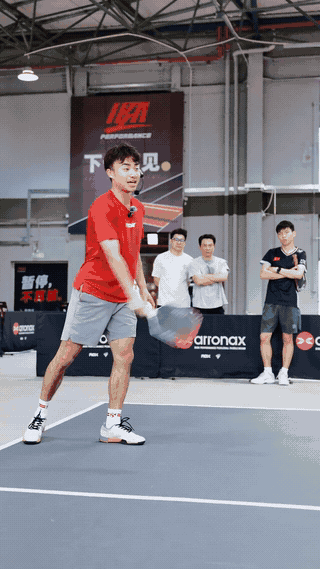

训练笔记 / FOREHAND DRIVE
正手抽球：
从站位到上旋的六个关键
抽球总下网、出界，或者一发力就失去控制？这段 James Lin 的现场教学，把注意力拉回了身体与球的距离、脚下的准备，以及重心带动球拍的先后顺序。
01 / 原视频约 00:35–01:30
先理解站姿，再决定怎样发力
James 对比了开放式与侧身的抽球方式。开放式站姿便于应对来球，但如果只让手臂横着甩，身体没有参与，很容易变成靠手硬抽。初学时，可以先用容易感受转体和重心移动的方式建立动作，再根据来球调整站姿。
这段教学值得抓住的重点，是站姿是否给身体留出了转动和向前发力的空间。不要只模仿脚的摆放，却忽略了后续的身体动作。
02 / 原视频约 01:30–02:30
用非持拍手，找出舒服的击球距离
球太贴近身体，挥拍空间会被挤住；离得太远，又容易变成伸手够球。视频中，James 让非持拍手向侧前方伸出，用它帮助感受身体与球之间的距离，再结合步伐找到合适的位置。
可以把非持拍手当作练习时的参照，体会伸展、转肩与接触点之间的关系。这个距离需要结合自己的臂长和动作调整，不必强求一个统一的厘米数。
播放动作 GIF：寻找击球距离

03 / 原视频约 02:30–03:35
先用脚到位，再让身体转起来
以视频中的右手持拍为例，James 示范先调整右脚，再配合另一只脚建立站位。如果脚没有给身体留出转动空间，手臂就会承担过多任务；只盯着挥拍，也容易漏掉准备阶段的脚步。
非持拍手同样参与准备：它的移动能帮助转肩、组织身体方向。练习时，把“脚步到位—身体转动—挥拍”连起来，避免等球到了身边才匆忙伸手。左手持拍者可将左右方向对照理解。
04 / 原视频约 03:35–04:45
握拍放松，引拍保持可控
握得过紧，手臂容易僵硬，也更难让腿与身体带动动作。James 强调放松握拍；这里的放松是保留控制能力，让球拍顺着身体运动，而不是握不住拍柄。
另一个常见误区是把引拍拉得很大，认为这样才能打得有力。视频建议引拍在身体稍后方保留适当空间，减少不必要的大幅后摆。来球留给你的时间有限，动作越能重复，越容易找到稳定的接触点。
05 / 原视频约 04:45–06:25
重心先走，手臂和球拍跟上
这段是整条教学的核心。James 反复拆解：先向下加载，再向前转移，让身体运动带动手臂与球拍。可以留意腿部、髋部和肩膀的连续变化，而不只是拍头最后走到哪里。
如果身体还没动，球拍已经急着向前冲，就很容易变成单纯用手发力。练慢一点，感受脚下开始、重心向前、手臂随后通过的顺序，再逐渐把动作连贯起来。
播放动作 GIF：先向下，再向前

06 / 原视频约 06:25–10:30；11:20 后有复习示范
把接触点放在前方，让随挥自然完成
讲到拍头、拍面和上旋时，James 示范了拍头向下准备，再随身体发力向前、向上通过的动作。他还用球的外侧作为接触位置的讲解参照，帮助理解球拍通过球的方向。
观察随挥时，视频把“手臂向前直推”与身体带动后的自然完成作了对比。不要为了摆出收拍造型而主动拧手腕；先让重心和转体连贯，再看球拍是否顺势完成动作。
播放动作 GIF：身体带动后的自然随挥

随后讲解还强调了向前的重心和击球时机：尽量在身体前方完成接触，脚下要能支撑向前发力；针对这套基础练习，James 提醒不要急着抢球的上升期。这里适合当作建立稳定动作的练习提示，具体对球的处理仍要结合来球速度与场上位置。
把要点带到球场
一份可以照着练的清单
下面是根据教学要点编排的练习建议，次数与顺序由本站整理，并非原视频指定训练量。每轮只抓一个问题，先追求动作能重复，再逐步加速。
- 无球慢挥 10 次：检查脚步、转肩与引拍空间，感受重心先动、手臂跟随。
- 自抛球 10 次：用非持拍手寻找距离，观察接触点是否在身体侧前方，避免贴身或够球。
- 搭档轻喂球 10 次：保持相近的来球，先移动到位，再连续完成加载、转移与随挥。
- 录一组侧面动作：回看身体是否向前、手臂是否抢先，以及收拍是不是自然完成；一次只调整一项。
脚先到位，留好距离；重心先走，球拍跟上。
教学与演示：James Lin · 视频发布：PICKLE PLANET悦棒 · 文字整理与练习编排：YK Pickleball。完整语境与更多示范请回看原视频。